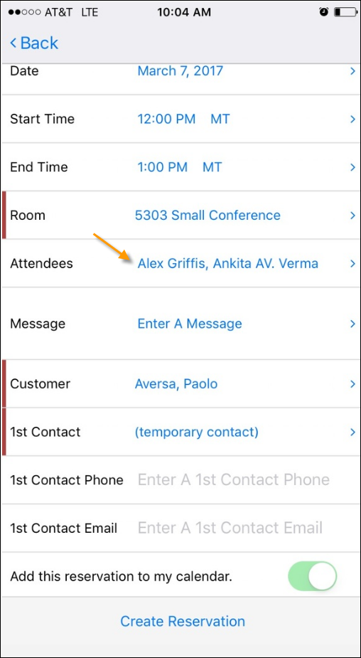
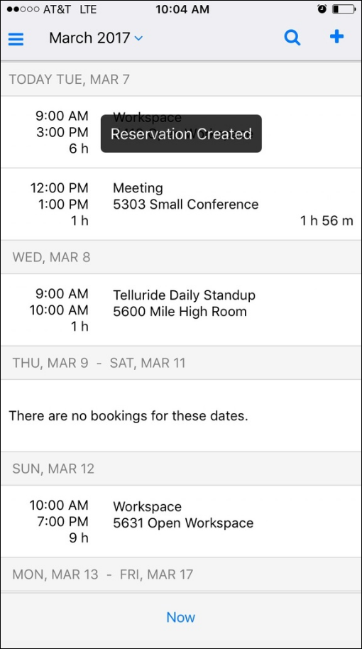

Invite People
When inviting people to your meetings, it is important to understand the difference between Attendees and Groups. Attendees are individuals who are invited to meetings. A Group is the person(s) responsible for the meeting. Your Administrator sets the label for the Group field, so the name may vary (in the example below, it is labeled "Customer"). A Group can designate a First Contact to oversee questions, changes, and updates to the meeting (First Contacts are optional). First Contacts will receive notifications regarding any meeting changes.
Concept: Attendees = Invitees. Group or First Contact = Meeting Organizers.
To invite people to your meeting:
- During the booking process, tap the Attendees field to invite people to your meeting.

- Search for people by entering name(s) in the Search field and tapping the Search icon. Tap on the names in the Search Results list to add them to the event. The list the system searches from is defined by your Administrator.

- You may be able to add multiple attendees; invitees that are already on the meeting show at the top; you can remove them by tapping the blue Remove icon. Tap Done when finished.
- In the Message field, enter the message you wish to send about the meeting to attendees.
- In the Group (or Customer) field, enter the name of the predefined group or person responsible for the meeting (on whose behalf you can book the meeting).
- In the First Contact field (optional), enter the name of the person who will be the first point of contact for the meeting; they will receive notifications and updates about the meeting if details change.
- Tap Save to complete the reservation. A message displays confirming that your reservation has been created. Your new booking will now appear on your Home page.
